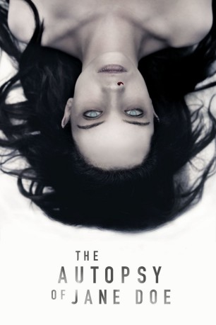

#7313 The Autopsy of Jane Doe
 
 IMDB-Wertung: 6.8 / 10
IMDB-Wertung: 6.8 / 10  Metascore: 0
Metascore: 0 
Zwei Gerichtsmediziner untersuchen die Leiche einer jungen Frau, einer Jane Doe, wie nicht identifizierte Personen in den USA genannt werden. Die Todesursache ist nicht auszumachen. Als die beiden versuchen Licht ins Dunkel zu bringen, stoßen sie auf bizarre Hinweise, die zu der dunklen Vergangenheit der jungen Frau führen.
Jahr: 2016
Dauer: 86 Minuten
FSK: 16
Land: England Studio: UFATonspuren: DD2.0 - ,
Untertitel: Englisch,
Auflösung: 1080p (1920x800) Größe: 6850 MB
Genre: Thriller, Horror, Mystery
Regisseur: André Øvredal
Drehbuch: Ian B. Goldberg
Soundtrack:
Darsteller:
Datei: X:\2016(A-F)\Autopsy of Jane Doe, The (2016, FSK16, 1920x800).mkv seit 16.10.2017
Festplatte: HD 2016(A-Z)
 Es gibt insgesamt 147 Filme in der Gruppe '2016(A-F)'
Es gibt insgesamt 147 Filme in der Gruppe '2016(A-F)'